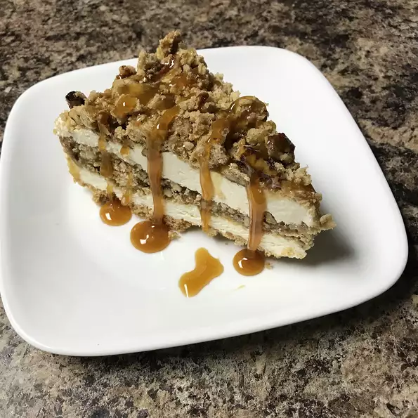

Butter Brickle Frozen Delight

Description
This dessert is a frozen winner! It is made in a 9" springform and can be stored in the freezer and served immediately when unexpected company arrives.
It is a very rich dessert with layers of butter brickle, caramel sauce, and a rich layer of cool whip & cream cheese. Very rich!
Ingredients
- 1¼ cups graham cracker crumbs
- ⅓ cup butter, melted
- ¼ cup white sugar
- 1 cup all-purpose flour
- ¾ cup quick cooking oats
- ¼ cup brown sugar
- ½ cup butter, melted
- ¾ cup chopped pecans
- 1 (8 ounce) package cream cheese
- 1 (14 ounce) can sweetened condensed milk
- 1 (12 ounce) container frozen whipped topping, thawed
- 1 (12 ounce) jar caramel topping
Steps
- Preheat oven to 350 degrees F (175 degrees C).
- In medium bowl, combine graham cracker crumbs, 1/3 cup melted butter and white sugar until well mixed. Press into bottom of a 9 inch springform pan.
- Bake 6 minutes, until set. Cool completely.
- Preheat oven to 400 degrees F (200 degrees C).
- In a large bowl, combine flour, oats, brown sugar, 1/2 cup melted butter and pecans until well mixed. Lightly pat onto a baking sheet.
- Bake 10 to 15 minutes, until light brown. Crumble while still hot. Cool completely.
- In large mixing bowl, beat cream cheese until smooth. Beat in condensed milk until well blended. Fold in whipped topping.
- Spread half of the cheese mixture over the crust in the springform pan. Sprinkle half of the oat crumbles over the cheese mixture, and spread half of the caramel sauce over that. Repeat layers. Freeze until firm, remove pan sides and serve cold.